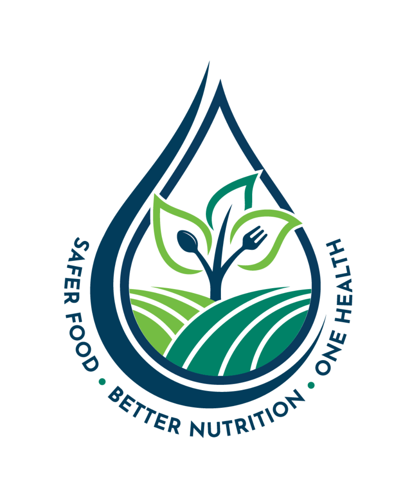

About Us

Vision Statement
Our vision at the Greenfield Local Hub is to cultivate a resilient community where every table is nourished by the hands of local growers, creating a future where fresh, honest food is the heartbeat of our local economy.
Mission Statement
Our mission is to bridge the gap between farm and fork by delivering the highest-quality seasonal produce directly from local producers to our neighbors. We are committed to transparency, fair outcomes for our farmers, and making fresh, sustainably-grown food accessible to everyone in our community.

Superior Freshness and Nutrition
Because locally sourced food doesn't have to endure long-distance shipping or extended storage, it is typically harvested at its peak ripeness. This ensures a superior taste and higher nutritional value; for example, fruits and vegetables begin to lose vital vitamins and minerals within 24 hours of being picked.
Boosted Local Economy
When you buy directly from a local producer, a much larger portion of your money stays within your community. This "multiplier effect" supports local jobs, helps small family farms thrive, and ensures that the people actually growing your food receive a fair price for their hard work by cutting out the middleman.
Reduced Environmental Impact
Direct-to-community sourcing significantly reduces "food miles"—the distance food travels from farm to plate. By minimizing the need for fuel-intensive transportation, energy-heavy refrigeration, and excessive plastic packaging required for long-haul shipping, you are actively lowering your carbon footprint and supporting more sustainable land management practices.